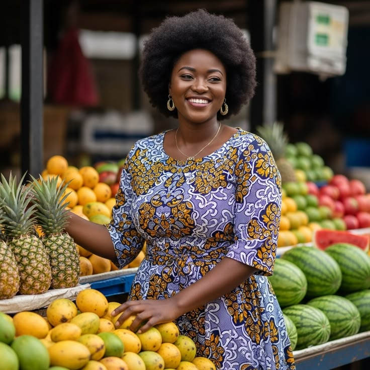

Foire agricole régionale
10 août 2026

La coopérative AGRI-TOGO a participé à la foire agricole régionale organisée à Lomé.
Cet événement a permis de présenter les produits agricoles des producteurs, de rencontrer des partenaires et de promouvoir les produits locaux togolais.
Cette participation renforce l'engagement d'AGRI-TOGO pour une agriculture durable et une meilleure valorisation des producteurs.
← Retour aux actualités